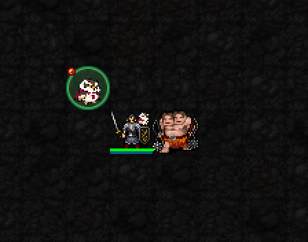

소환 직후 실제 필드
왼쪽 위 새가 실제 아군 매입니다. 간모의 금색 눈·흰 털깃·자주색 망토로 구분됩니다. 캐릭터 옆 작은 문양은 권속 활성 표시입니다.

신앙 문양 · 제단
캐릭터 주위 빈 바닥에 소환됩니다. 영상은 시전 이펙트 두 프레임과 소환 상태입니다.
아군 매 1마리 소환 → 적을 추격하고 근접 공격
해금: 신앙 ★(30) · 최소 기도술 제한 없음.
비용: MP3 · 신앙 소모 없음 · 행동 1턴. 별도 재사용 대기 없이 소환 한도까지 다시 사용 가능.
한도: 기본 2마리 · 신앙 ★★★(75)부터 3마리. 5성 군세 중에는 최대 6마리.
왼쪽 위 새가 실제 아군 매입니다. 간모의 금색 눈·흰 털깃·자주색 망토로 구분됩니다. 캐릭터 옆 작은 문양은 권속 활성 표시입니다.

신앙 문양 · 제단
캐릭터 주위 빈 바닥에 소환됩니다. 영상은 시전 이펙트 두 프레임과 소환 상태입니다.
I = 기도술. 아래 예시는 I=12입니다.
| 항목 | 수치 |
|---|---|
| 소환 완료 후 유지 | 12+0.4I턴 → 16.8턴 |
| 체력 | 12+I → 24 |
| 방어력 AC | 1 |
| 회피 EV | 14+⌊I/3⌋ → 18 |
| 근접 기본 피해 | 5+⌊I/3⌋ → 9 |
| 명중 기준값 | 16+I → 28 |
| 행동 | 비행 · 기본 이동 0.8턴 · 공격 1턴 |
피해는 실제 명중·적 방어 계산에 따라 달라집니다.
지속시간이 끝나거나 체력이 다하면 사라집니다. 층을 이동할 때 플레이어에게 인접한 매만 동행합니다.
1성 소환 한도는 기본 2마리이며, 추가 집중 공격·군세 강화는 다음 성급의 효과입니다.
현재 구현의 실제 SDL 캡처를 사용했습니다. 전투 수치는 유지하고 소환수·활성 표식·제단·신앙 문양을 간모 디자인으로 교체했습니다. 코요리 1·3·5성은 확정 저장했습니다.